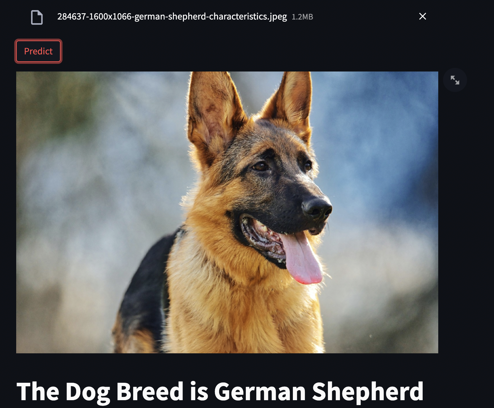
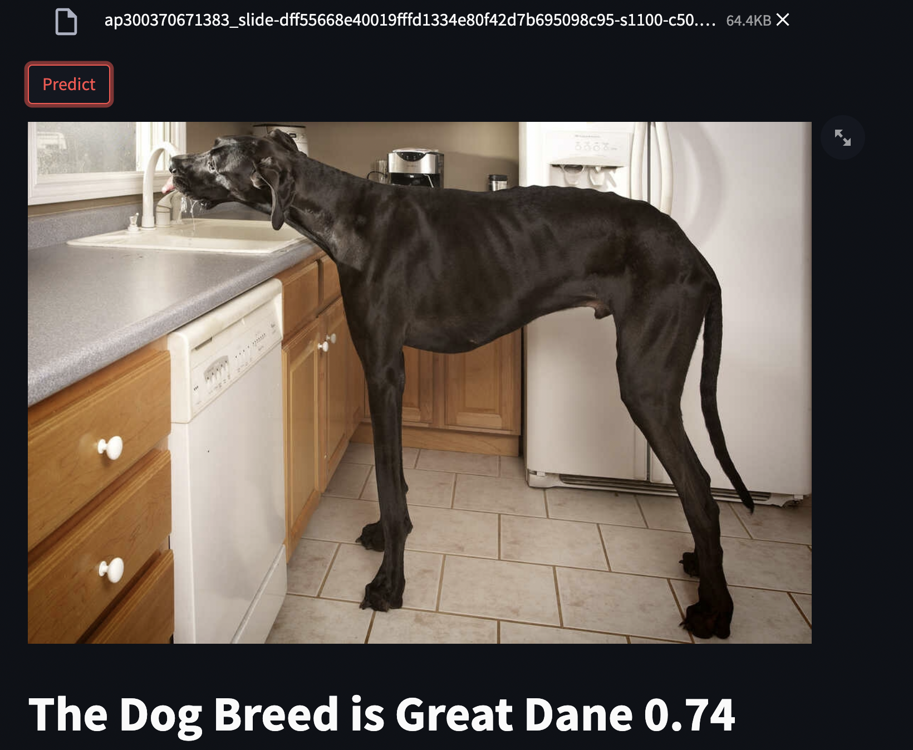
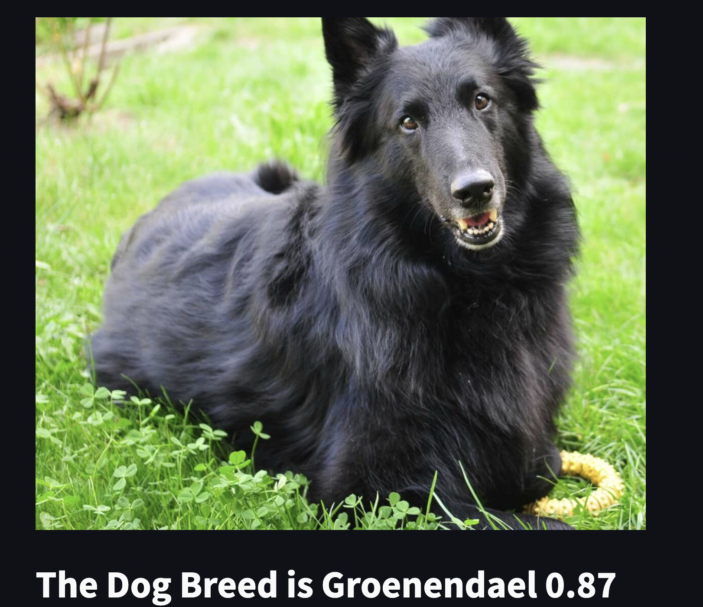

Dog Breed
Predicting the breed of a dog using a fine-tuned state-of-the-art Convolution Neural Network.
Introduction
In this project, I built an end to end machine learning application that predicts the breed of a dog using a convolutional neural network.

The Dataset
The images used to train the model was sourced from the stanford website consisting of 20580 images, about 150 per breed and a total 120 breeds.Model
Keras provides alot of state-of-the-art models for anyone to use which leads to an issue, deciding which model to pick. Typically there is a trade-off between accuracy and inference time, so ultimately the decision lies on the use cases.
In our case, I opted to use the Efficient Net model. This model came from the paper "EfficientNet: Rethinking Model Scaling for Convolutional Neural Networks" where the authors studied model scaling and identified that carefully balancing network depth, width, and resolution can lead to better performance. They used neural architecture search to design a new baseline network and scale it up to obtain a family of models, called EfficientNets, which achieve much better accuracy and efficiency than previous ConvNets.
base_model = EfficientNetV2L(
include_top=False,
weights="imagenet",
input_shape=(256, 256, 3))
for layer in base_model.layers:
layer.trainable = False
model = Sequential()
model.add(Input(shape=(256,256,3)))
model.add(data_augmentation)
model.add(base_model)
model.add(GlobalAveragePooling2D())
model.add(Dropout(0.5))
model.add(Dense(120,activation='softmax'))
model.summary()
Model: "sequential_1"
_________________________________________________________________
Layer (type) Output Shape Param #
=================================================================
efficientnetv2-l (Functiona (None, 8, 8, 1280) 117746848
l)
global_average_pooling2d_2 (None, 1280) 0
(GlobalAveragePooling2D)
dropout_2 (Dropout) (None, 1280) 0
dense_2 (Dense) (None, 120) 153720
=================================================================
Total params: 117,900,568
Trainable params: 153,720
Non-trainable params: 117,746,848
_________________________________________________________________
Training
The model was trained locally on a Macbook Pro M2 2022 with 16G RAM. I made use of the TensorFlow Data pipeline to avoid loading all images into the memory.
ds_train, ds_test = tfds.load('stanford_dogs', split=['train', "test"],
as_supervised=True, shuffle_files=True)
def normalize_img(image, label):
image = tf.image.resize(image, size=(256, 256))
return image, label
ds_train = ds_train.map(normalize_img)
ds_train = ds_train.batch(128)
ds_train = ds_train.prefetch(tf.data.AUTOTUNE)
ds_test = ds_test.map(normalize_img)
ds_test = ds_test.batch(128)
ds_test = ds_test.prefetch(tf.data.AUTOTUNE)
Data augmentation was carried out using a Keras Sequential model:
data_augmentation = Sequential([
preprocessing.RandomFlip("horizontal"),
preprocessing.RandomRotation(0.2),
preprocessing.RandomZoom(0.2),
preprocessing.RandomHeight(0.2),
preprocessing.RandomWidth(0.2),
# preprocessing.Rescaling(1./255) # keep for ResNet50V2, remove for EfficientNetB0
], name ="data_augmentation")
Next was define all our callbacks to further minimize overfitting and wasting computational resources.
checkpoint = ModelCheckpoint(
'./base.model',
monitor='val_loss',
verbose=1,
save_best_only=True,
mode='min',
save_weights_only=False,
save_freq="epoch"
)
earlystop = EarlyStopping(
monitor='val_loss',
min_delta=0.001,
patience=10,
verbose=1,
restore_best_weights=True,
mode='auto'
)
reduce = ReduceLROnPlateau(
monitor='val_loss',
factor=0.1,
patience=3,
verbose=1,
mode='auto'
)
callbacks = [checkpoint, earlystop, reduce]
The model was trained for about 30 epochs (2 hours) before reaching a validation accuracy of 95%.
Deployment
After training, the model was saved and uploaded to a Google bucket, then the model was deployed as an endpoint using Vertex AI on Google Cloud Platform. Then to make predictions, we make a request to the model.
def predict_custom_trained_model(
project: str,
endpoint_id: str,
instances,
location: str = "northamerica-northeast2",
api_endpoint: str = "northamerica-northeast2-aiplatform.googleapis.com",
):
"""
`instances` can be either single instance of type dict or a list
of instances.
"""
# The AI Platform services require regional API endpoints.
client_options = {"api_endpoint": api_endpoint}
# Initialize client that will be used to create and send requests.
client = aiplatform.gapic.PredictionServiceClient(client_options=client_options)
instances = instances.numpy().tolist()
instances = instances if type(instances) == list else [instances]
instances = [
json_format.ParseDict(instance_dict, Value()) for instance_dict in instances
]
parameters_dict = {}
parameters = json_format.ParseDict(parameters_dict, Value())
endpoint = client.endpoint_path(
project=project, location=location, endpoint=endpoint_id
)
response = client.predict(
endpoint=endpoint, instances=instances, parameters=parameters
)
# The predictions are a google.protobuf.Value representation of the model's predictions.
predictions = response.predictions
return predictions
Application
Streamlit was used for the UI of this project. Streamlit is an open source app framework in Python language. It helps us create web apps for data science and machine learning in a short time.
Docker was used to containerize this application to be pushed to the Heroku platform.
Dockerfile:
FROM python:3.9-slim
EXPOSE $PORT
# Keeps Python from generating .pyc files in the container
ENV PYTHONDONTWRITEBYTECODE=1
# Turns off buffering for easier container logging
ENV PYTHONUNBUFFERED=1
# Install pip requirements
COPY requirements.txt .
RUN python -m pip install --upgrade pip
RUN python -m pip install -r requirements.txt
WORKDIR /main
COPY . /main
# During debugging, this entry point will be overridden.
CMD streamlit run --server.port $PORT --server.enableCORS false main.py
C.I/C.D
Deployment was done continuously during development using github actions. I push to the Heroku platform on every code push to GitHub.workflow yaml file:
# Your workflow name.
name: Deploy to heroku.
# Run workflow on every push to main branch.
on:
push:
branches: [main]
# Your workflows jobs.
jobs:
build:
runs-on: ubuntu-latest
steps:
# Check-out your repository.
- name: Checkout
uses: actions/checkout@v2
### ⬇ IMPORTANT PART ⬇ ###
- name: Build, Push and Release a Docker container to Heroku. # Your custom step name
uses: gonuit/heroku-docker-deploy@v1.3.3 # GitHub action name (leave it as it is).
with:
# Below you must provide variables for your Heroku app.
# The email address associated with your Heroku account.
# If you don't want to use repository secrets (which is recommended) you can do:
# email: my.email@example.com
email: ${{ secrets.HEROKU_EMAIL }}
# Heroku API key associated with provided user's email.
# Api Key is available under your Heroku account settings.
heroku_api_key: ${{ secrets.HEROKU_API_KEY }}
Gallery
  